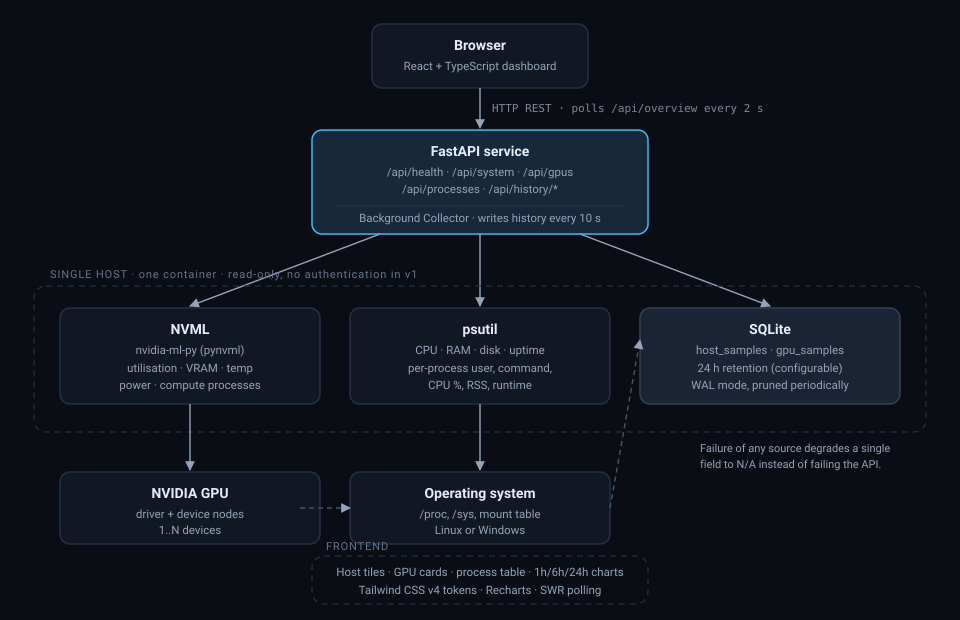
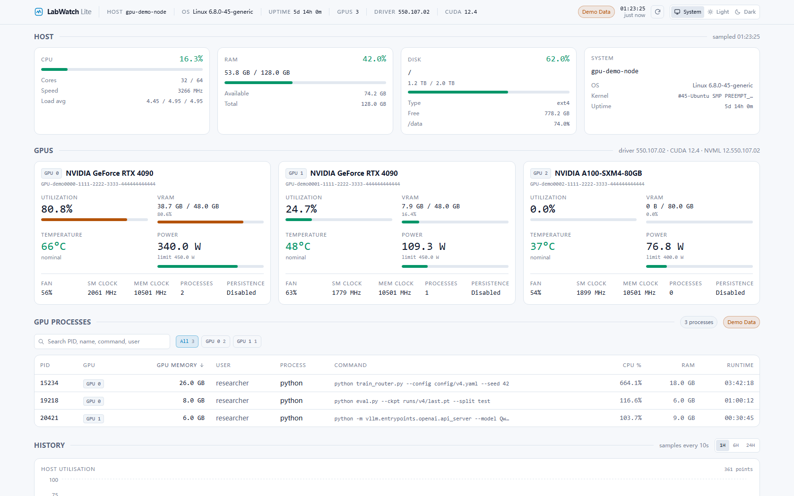
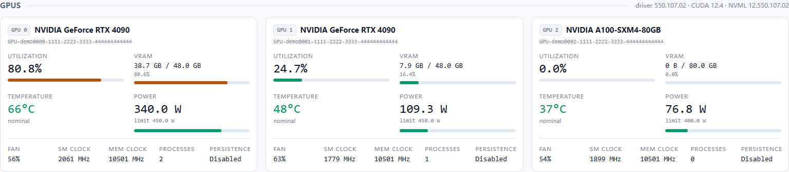
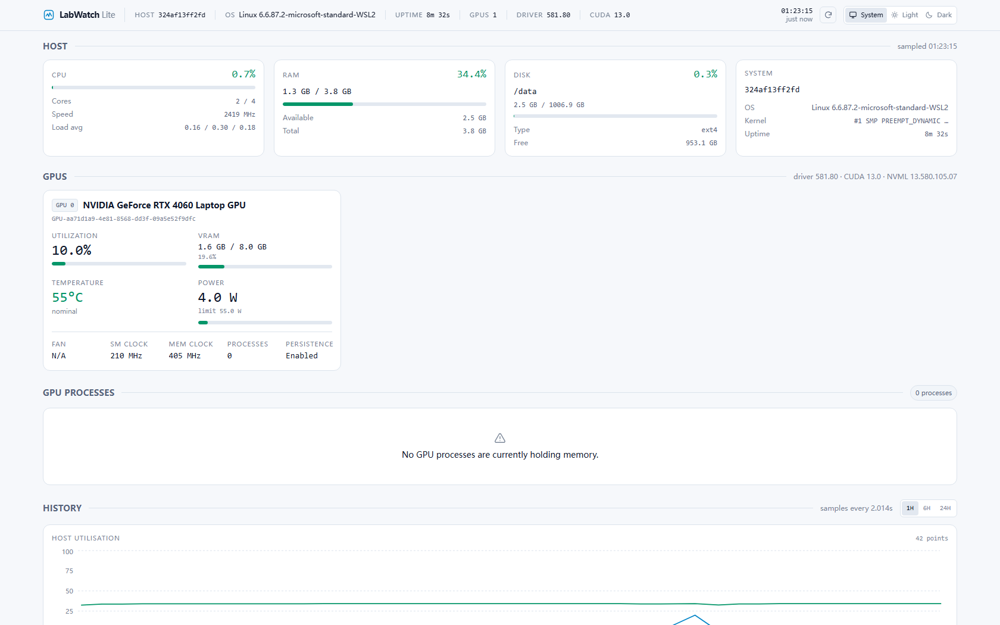
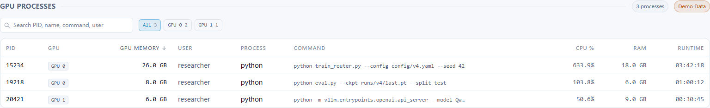
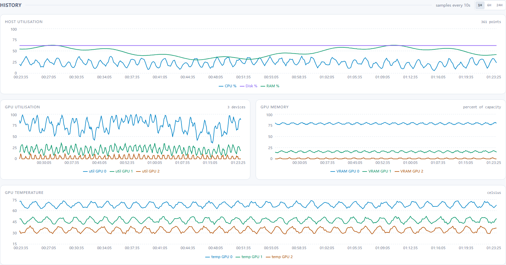
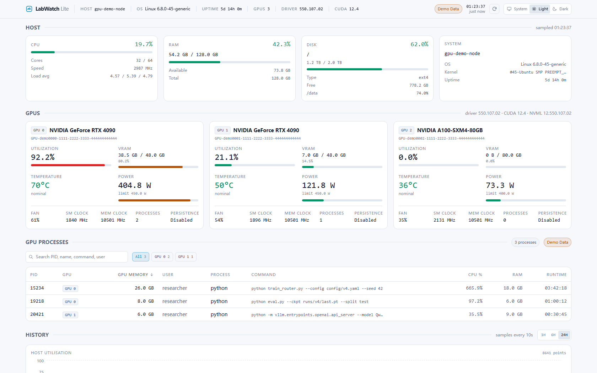

A lightweight self-hosted dashboard for monitoring NVIDIA GPUs and AI development servers.
轻量级、自托管的 NVIDIA GPU 与 AI 开发服务器监控面板。
LabWatch answers, on one self-refreshing page, the questions that otherwise require an SSH
session and repeated nvidia-smi, htop and df -h runs:
which GPU is free, what is running on it, who owns those processes, how long they have been
running, whether RAM or disk is about to run out, and what utilisation looked like over the
last hour, six hours or day.
LabWatch 在一个自动刷新的页面上，回答了那些原本需要登录 SSH 并反复执行
nvidia-smi、htop、df -h 才能回答的问题：
哪张卡是空的、上面在跑什么、那些进程属于谁、已经跑了多久、内存或磁盘是否即将耗尽，
以及过去一小时、六小时、一天里的利用率是什么样。
| Area | Detail |
|---|---|
| GPU telemetry | Utilisation, VRAM used/total and %, temperature, power draw, enforced power limit and derived %, fan, SM and memory clocks, persistence mode, process count. |
| GPU processes | NVML compute PIDs joined with psutil: user, full command line, CPU %, resident memory, status, start time, runtime (human and clock form). |
| Host telemetry | CPU usage, physical/logical cores, frequency, load average, per-core breakdown; RAM used/total/available/%; disk with the primary mount plus optional extra mounts; hostname, OS, kernel, platform, uptime. |
| History | Host and per-GPU samples persisted to SQLite (WAL), background collector, retention pruning plus a hard row cap, and 1H/6H/24H series endpoints. |
| Dashboard | Host tiles, one card per GPU, sortable/filterable/searchable process table, four history charts, sticky header with connection state, system/light/dark themes applied before first paint. |
| Resilience | Missing driver, missing GPU, unsupported sensors, vanishing processes and database faults all degrade locally instead of breaking the page or the API. |
| Demo mode | Deterministic synthetic GPUs, processes and history, labelled Demo Data, so the project is demonstrable and testable without an NVIDIA card. |
| Operations | Multi-stage Docker image, Compose deployment with a named volume, environment-variable configuration, health endpoint, CI pipeline with a container smoke test. |
| 领域 | 细节 |
|---|---|
| GPU 遥测 | 利用率、显存已用/总量及百分比、温度、功耗、强制功耗上限及推导百分比、风扇、SM 与显存频率、持久化模式、进程数。 |
| GPU 进程 | 把 NVML 计算 PID 与 psutil 关联：用户、完整命令行、CPU %、常驻内存、状态、启动时间、运行时长（人类可读与时钟两种形式）。 |
| 主机遥测 | CPU 使用率、物理/逻辑核心数、频率、负载均值、单核明细；内存已用/总量/可用/百分比；磁盘主挂载点及可选的其他挂载点；主机名、系统、内核、平台、运行时长。 |
| 历史数据 | 主机与逐卡采样写入 SQLite（WAL 模式），后台采集器、按保留窗口清理并设行数硬上限，提供 1H/6H/24H 序列接口。 |
| 面板 | 主机卡片、每张 GPU 一张卡片、可排序/过滤/搜索的进程表、四张历史图表、带连接状态的吸顶顶栏、首屏渲染前即生效的系统/浅色/深色主题。 |
| 健壮性 | 驱动缺失、无 GPU、传感器不支持、进程消失、数据库故障，全部局部降级，而不是让页面或 API 崩掉。 |
| 演示模式 | 确定性的合成 GPU、进程与历史数据，明确标注 Demo Data，因此在没有 N 卡的机器上也能演示与测试。 |
| 运维 | 多阶段 Docker 镜像、带命名卷的 Compose 部署、环境变量配置、健康检查接口、含容器冒烟测试的 CI 流水线。 |

The browser polls a single aggregated endpoint (/api/overview) so one refresh is
one round trip. Polling pauses while the tab is hidden. A background asyncio task samples the
collectors every ten seconds in a worker thread (NVML and psutil are blocking) and writes to
SQLite. NVML is initialised lazily, exactly once, behind a lock, because the library is not
thread safe.
浏览器只轮询一个聚合接口（/api/overview），因此一次刷新只有一次往返。标签页
隐藏时暂停轮询。后台 asyncio 任务每十秒在工作线程中采集一次（NVML 与 psutil 都是阻塞
调用）并写入 SQLite。NVML 采用惰性初始化，且因为该库并非线程安全，全过程只初始化一次
并加锁保护。
v1 deliberately has no WebSockets, no message queue, no cache layer and no authentication: at a two second refresh they would add operational surface without changing the experience.
v1 刻意不引入 WebSocket、消息队列、缓存层与认证：在 2 秒刷新频率下，它们只会增加运维 面，并不会改善使用体验。
Captures below come from the production container image. The first two are demo mode; the third is the same image reading a real RTX 4060 through NVML.
以下截图全部来自生产容器镜像。前两张为演示模式；第三张是同一个镜像通过 NVML 读取真实 RTX 4060 的效果。






| Suite | Tests | Result | Notes |
|---|---|---|---|
| Backend (pytest) | 112 | pass | 94 % line coverage over app/; NVML replaced by a configurable fake. Verified stable over eight consecutive runs. |
| Frontend (Vitest) | 75 | pass | Formatting, theme, API client, host tiles, GPU cards, process table sorting/filtering/search, empty and no-GPU states. |
| End-to-end (Playwright) | 8 | pass | Real Chromium against a demo backend and the dev server; also asserts zero console errors. |
| Ruff lint | — | clean | ruff check app tests |
| TypeScript | — | clean | tsc -b with strict, noUnusedLocals, noUnusedParameters. |
| Production build | — | pass | vite build; ~633 kB JS / ~21 kB CSS before gzip. |
| Docker image | — | pass | Multi-stage build, 302 MB, runs as uid 10001. |
| Container smoke test | — | pass | Healthy in 2 s; dashboard, assets, SPA fallback and every API endpoint verified inside the container. |
| Container with GPU passthrough | — | pass | --gpus all: NVML initialised in-container (driver 581.80) and reported the real device. |
| 7 hour sustained run | — | pass | 11541 writes, 0 collector failures, sample interval held at 2 s without drift. |
| 套件 | 数量 | 结果 | 说明 |
|---|---|---|---|
| 后端（pytest） | 112 | 通过 | app/ 行覆盖率 94%；用可配置的仿真实现替换 NVML。连续 8 次运行均稳定。 |
| 前端（Vitest） | 75 | 通过 | 格式化、主题、API 客户端、主机卡片、GPU 卡片、进程表排序/过滤/搜索、空状态与无 GPU 状态。 |
| 端到端（Playwright） | 8 | 通过 | 真实 Chromium 对接演示后端与开发服务器；同时断言零 console 错误。 |
| Ruff 静态检查 | — | 干净 | ruff check app tests |
| TypeScript | — | 干净 | tsc -b，开启 strict、noUnusedLocals、noUnusedParameters。 |
| 生产构建 | — | 通过 | vite build；gzip 前约 633 kB JS / 21 kB CSS。 |
| Docker 镜像 | — | 通过 | 多阶段构建，302 MB，以 uid 10001 运行。 |
| 容器冒烟测试 | — | 通过 | 2 秒内健康；在容器内验证面板、静态资源、SPA 回退路由以及全部 API 接口。 |
| 容器 + GPU 直通 | — | 通过 | --gpus all：容器内成功初始化 NVML（驱动 581.80）并读到真实设备。 |
| 7 小时持续运行 | — | 通过 | 写入 11541 次，采集失败 0 次，采样间隔稳定保持 2 秒无漂移。 |
nvmlInit raising, and nvidia-ml-py not installedN/A independentlygetloadavg that is absent or not callabledegraded rather than crashing)nvmlInit 抛异常、以及 nvidia-ml-py 未安装N/Agetloadavg 不存在或不可调用degraded，而不是崩溃）
The development host has an NVIDIA GeForce RTX 4060 Laptop GPU (driver 581.80, CUDA driver
13.0). LabWatch's readings were compared against nvidia-smi both natively and
from inside the container.
开发机配备 NVIDIA GeForce RTX 4060 Laptop GPU（驱动 581.80，CUDA 驱动 13.0）。LabWatch 的
读数在本机与容器内分别与 nvidia-smi 做过对比。
| Metric | nvidia-smi | LabWatch | Verdict |
|---|---|---|---|
| Utilisation | 9 % / 27 % / 40 % | 10 % / 28 % / 40 % | within one sample |
| VRAM total | 8188 MiB | 8188 MiB | exact |
| VRAM used | 1369 MiB | 1599 MiB | within sample skew |
| Temperature | 58 °C / 48 °C / 71 °C | 57 °C / 47 °C / 71 °C | within one sample |
| Power draw | 3.95 W / 7.82 W | 4.0 W / 7.9 W | exact to 1 dp |
| Power limit | [N/A] | N/A | correctly absent |
| 指标 | nvidia-smi | LabWatch | 判定 |
|---|---|---|---|
| 利用率 | 9 % / 27 % / 40 % | 10 % / 28 % / 40 % | 单次采样误差内 |
| 显存总量 | 8188 MiB | 8188 MiB | 完全一致 |
| 显存占用 | 1369 MiB | 1599 MiB | 采样偏差内 |
| 温度 | 58 °C / 48 °C / 71 °C | 57 °C / 47 °C / 71 °C | 单次采样误差内 |
| 功耗 | 3.95 W / 7.82 W | 4.0 W / 7.9 W | 小数点后一位一致 |
| 功耗上限 | [N/A] | N/A | 正确显示为不支持 |
The GPU process list matches nvidia-smi --query-compute-apps pid for pid, with
additional user, command, CPU and runtime detail that nvidia-smi does not
provide. History was left running and read back: 361 host points at a 10 second interval for
the 1H window, and an 8641 point 24H series after a restart.
GPU 进程列表与 nvidia-smi --query-compute-apps 的 PID 完全一致，并额外提供
nvidia-smi 没有的用户、命令行、CPU 与运行时长。历史数据经长时间运行后回读：
1H 窗口在 10 秒间隔下得到 361 个主机采样点，重启后 24H 序列有 8641 个点。
These were found by the tests, by looking at the rendered UI, or by comparing against the driver — not by reading code alone.
以下缺陷来自测试、来自观察真实渲染的界面、或来自与驱动的对比 —— 而不是仅靠阅读代码发现的。
| # | Bug | Impact | Fix |
|---|---|---|---|
| 1 | /api/health read last_history_write from a context field that is only assigned during shutdown. |
A running server always reported null, so the collector looked dead and the value could not be monitored. |
Read the live value from the history service and expose collector writes, errors, interval and stored point count. |
| 2 | Per-process CPU deltas were discarded: the psutil priming cache was cleared on every poll. | Process CPU % could never accumulate a real delta and stayed at zero. | Keep baselines keyed by pid, prime before enrichment, and prune pids that disappear. |
| 3 | NVML graphics-running-processes made the table unusable on Windows (about 30 desktop apps). | The GPU process table was dominated by compositing noise instead of workloads. | Default to compute processes (matching nvidia-smi --query-compute-apps) with an opt-in flag for graphics contexts. |
| 4 | Demo disk usage was computed from hours since the Unix epoch (about 490,000 h). | The disk tile showed 99 % critical in every screenshot, which is both wrong and alarming. | Anchor the growth curve to the current year plus nine months and clamp it, giving a realistic 62 %. |
| 5 | Demo signals were sampled at one second regardless of chart resolution. | The 24H chart was an unreadable solid block; the 1H chart looked like a synthetic sine wave. | Scale jitter amplitude, jitter period and the load envelope with the requested window. |
| 6 | os.getloadavg was called without guarding against TypeError on platforms that expose it as None. |
CPU collection raised instead of reporting N/A for load average. |
Treat missing or non-callable implementations as N/A. |
| 7 | The screenshot script located sections by loose heading patterns such as /host/i. |
Playwright strict mode failed once chart titles like "Host utilisation" existed — a latent test-suite break. | Target section containers by data-testid, and match section headings exactly. |
| 8 | Dockerfile carried a # syntax=docker/dockerfile:1 directive it did not need. |
The build failed on any host that cannot reach the Docker frontend image registry. | Remove the directive; the file only uses portable instructions. |
| 9 | Two tests were genuinely flaky: a CPU-burn assumption, and a race where the health check was polled on last_history_write while the first sample was still in flight. |
Intermittent red builds that would erode trust in CI. | Assert deterministic signals, and poll on the definitive completion counter instead. |
| 10 | Primary disk detection picked the longest matching mount point, so inside a container it selected /etc/resolv.conf — a 2.5 GB ext4 bind mount. |
Found only by rendering the dashboard against the real container: the disk tile showed a config file instead of the filesystem. A plausible-looking but meaningless number is worse than no number. | Ignore pseudo filesystems and container-injected file mounts, prefer the root filesystem, and otherwise take the shallowest real mount. |
| # | 缺陷 | 影响 | 修复 |
|---|---|---|---|
| 1 | /api/health 从一个只在关机时才赋值的上下文字段读取 last_history_write。 |
运行中的服务永远返回 null，采集器看起来像挂了，该值也无法用于监控。 |
改从历史服务读取实时值，并补充暴露写入次数、失败次数、采样间隔与库中点数。 |
| 2 | 逐进程 CPU 差值被丢弃：psutil 的基准缓存每轮轮询都被清空。 | 进程 CPU % 永远无法累积出真实差值，始终为 0。 | 按 PID 保留基准、在补全信息之前打基准，并清理消失的 PID。 |
| 3 | NVML 的图形运行进程接口让进程表在 Windows 上完全不可用（约 30 个桌面程序）。 | GPU 进程表被合成器噪声淹没，看不到真正的工作负载。 | 默认只列计算进程（与 nvidia-smi --query-compute-apps 一致），并保留包含图形上下文的开关。 |
| 4 | 演示数据的磁盘用量按"Unix 纪元至今的小时数"计算（约 49 万小时）。 | 每张截图里磁盘卡片都显示 99 % 严重，既错误又刺眼。 | 把增长曲线锚定到"当前年份 + 9 个月"并加夹取，得到真实的 62 %。 |
| 5 | 演示信号无论图表分辨率如何都按 1 秒采样。 | 24H 图糊成一块无法阅读的实心块；1H 图则像标准正弦波，一眼假。 | 让抖动幅度、抖动周期与负载包络都随所请求的时间窗口缩放。 |
| 6 | 调用 os.getloadavg 时未防御 TypeError，而某些平台把它暴露为 None。 |
CPU 采集直接抛异常，而不是把负载均值报为 N/A。 |
把缺失或不可调用的实现一律视为 N/A。 |
| 7 | 截图脚本用 /host/i 这类宽松的标题匹配定位区块。 |
一旦出现 "Host utilisation" 这类图表标题，Playwright 严格模式就会失败 —— 一颗埋着的测试隐患。 | 改为通过 data-testid 定位区块容器，并让区块标题精确匹配。 |
| 8 | Dockerfile 带了一个并不需要的 # syntax=docker/dockerfile:1 指令。 |
在无法访问 Docker 前端镜像仓库的主机上，构建直接失败。 | 删除该指令；文件本身只使用可移植指令。 |
| 9 | 两个测试确实不稳定：一个依赖"烧 CPU"的假设，另一个在首个采样尚未完成时就轮询 last_history_write。 |
间歇性红灯会侵蚀对 CI 的信任。 | 改为断言确定性信号，并以明确的完成计数器作为轮询条件。 |
| 10 | 主磁盘探测选择"匹配路径最长"的挂载点，于是在容器内选中了 /etc/resolv.conf —— 一个 2.5 GB 的 ext4 单文件挂载。 |
只有真正对着容器渲染面板才发现：磁盘卡片显示的是一个配置文件而不是文件系统。一个看起来合理却毫无意义的数字，比没有数字更糟。 | 排除伪文件系统与容器注入的文件挂载，优先根文件系统，否则取路径最浅的真实挂载点。 |
| Limitation | Reason / mitigation |
|---|---|
| Single host only | An explicit v1 scope decision. Multi-server aggregation is on the roadmap. |
| No authentication | Intended for trusted private networks. The README warns that process command lines may be sensitive. Put it behind an authenticating reverse proxy if exposed. |
| NVIDIA only | Telemetry comes from NVML. AMD and Intel GPUs are not read. |
| Noisy graphics contexts on Windows | WDDM exposes every compositing application as a compute process. Linux targets are unaffected; an opt-in flag includes graphics contexts. |
| Sampled, not streamed history | A 10 second write interval can miss brief spikes. Lower LABWATCH_HISTORY_INTERVAL if that matters. |
Load average is N/A on Windows | The platform does not expose it; the UI shows N/A rather than a fabricated zero. |
| Per-process CPU needs two polls | CPU usage is a counter delta, so the first sample after startup reports N/A for process CPU. Documented behaviour, not a defect. |
| Container disk figures describe the container | When the root filesystem is an overlay (Docker Desktop), LabWatch falls back to the shallowest real mount, which may be a data volume. Run LabWatch natively for host disk numbers. |
| Multiple GPUs verified in demo mode only | This development machine has one GPU, so multi-device rendering was exercised with three synthetic devices. The collector enumerates NVML devices generically, with no single-device assumption. |
| 限制 | 原因 / 应对 |
|---|---|
| 仅支持单机 | 这是 v1 明确的范围决策。多机聚合在路线图中。 |
| 没有认证 | 面向可信内网。README 已提醒进程命令行可能包含敏感信息。若要对外暴露，请置于带认证的反向代理之后。 |
| 仅支持 NVIDIA | 遥测来自 NVML，不读取 AMD 与 Intel GPU。 |
| Windows 上图形上下文噪声大 | WDDM 会把每个合成程序都暴露为计算进程。目标平台 Linux 不受影响；提供开关以包含图形上下文。 |
| 历史是采样的，不是流式的 | 10 秒写入间隔可能漏掉瞬时尖峰。如有需要可调低 LABWATCH_HISTORY_INTERVAL。 |
Windows 上负载均值为 N/A | 平台不提供该数据；界面显示 N/A，而不是编造一个 0。 |
| 逐进程 CPU 需要两次采样 | CPU 使用率是计数器差值，因此启动后的第一次采样中进程 CPU 报 N/A。这是有意的行为，不是缺陷。 |
| 容器内的磁盘数字描述容器本身 | 当根文件系统是 overlay（Docker Desktop）时，LabWatch 退回最浅的真实挂载点，可能是数据卷。需要宿主机磁盘数字请直接在宿主机运行。 |
| 多卡仅在演示模式下验证过 | 本开发机只有一张 GPU，因此多设备渲染是通过 3 个合成设备验证的。采集器采用通用 NVML 设备枚举，没有任何单卡假设。 |
tmp/, no debug.json, no stray logs. Every tracked file is source, test, documentation, deployment configuration or a referenced image.backend/data/, *.db*, node_modules/, dist/, coverage, Playwright reports, .env.docs/images/ and every one is referenced by the README or this report.frontend/scripts/capture-screenshots.mjs instead of being pasted in by hand.tmp/、没有 debug.json、没有散落的日志。每个纳入版本控制的文件都是源码、测试、文档、部署配置或被引用的图片。backend/data/、*.db*、node_modules/、dist/、覆盖率、Playwright 报告、.env。docs/images/，每一张都被 README 或本报告引用。frontend/scripts/capture-screenshots.mjs 重现，而不是手工粘贴进去。| Definition-of-done item | Status |
|---|---|
| Core monitoring works | verified against the driver |
| Multiple GPUs on one host | per-device cards, series and filters |
| GPU process mapping works | NVML pids joined to psutil detail |
| Historical charts work | 1H/6H/24H, persisted in SQLite |
| No-GPU failure is graceful | tested; host metrics keep working |
| Tests pass | 112 + 75 + 8 |
| CI passes | lint, tests, build, E2E, Docker smoke test |
| Docker works | built, smoke tested, and run with GPU passthrough |
| README complete | features, quick start, architecture, config, API, limitations, roadmap (English + 中文) |
| Screenshots complete | twelve, all referenced, including real hardware |
| Architecture diagram complete | docs/architecture.svg |
| Demo mode works | and is clearly labelled in the UI |
| No major console or API errors | asserted by the E2E suite and the capture script |
| Repository clean | see section 7 |
| 完成度检查项 | 状态 |
|---|---|
| 核心监控可用 | 已与驱动实测比对 |
| 单机多卡 | 逐卡卡片、序列与过滤 |
| GPU 进程映射可用 | NVML PID 与 psutil 信息关联 |
| 历史图表可用 | 1H/6H/24H，持久化于 SQLite |
| 无 GPU 时优雅降级 | 已测试；主机指标照常工作 |
| 测试通过 | 112 + 75 + 8 |
| CI 通过 | lint、测试、构建、E2E、Docker 冒烟测试 |
| Docker 可用 | 已构建、已冒烟测试、已验证 GPU 直通 |
| README 完整 | 功能、快速开始、架构、配置、API、限制、路线图（英文 + 中文） |
| 截图完整 | 12 张，全部被引用，含真实硬件 |
| 架构图完整 | docs/architecture.svg |
| 演示模式可用 | 并在界面中明确标注 |
| 无重大 console / API 报错 | 由 E2E 套件与截图脚本断言 |
| 仓库整洁 | 见第 7 节 |